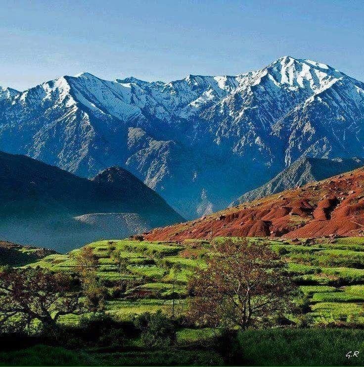
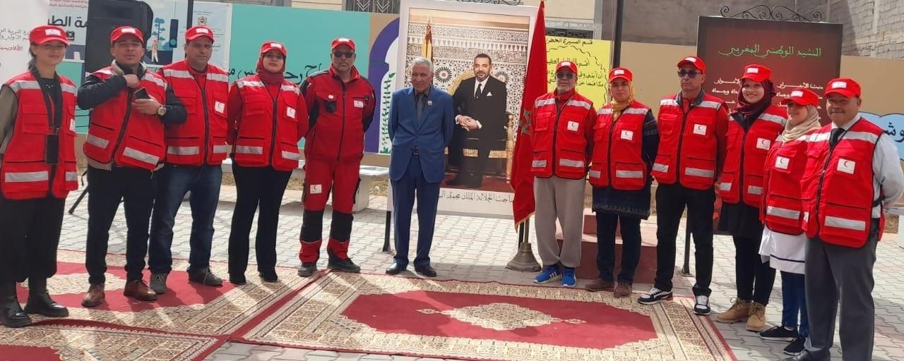
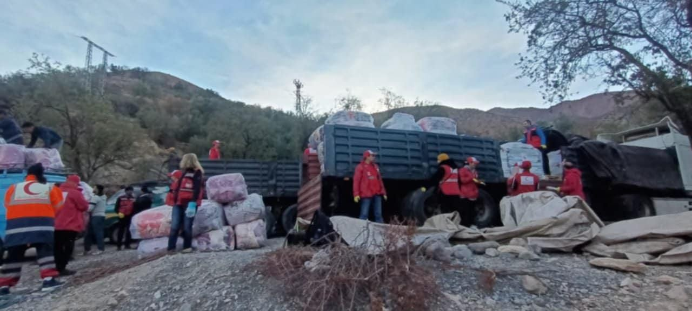
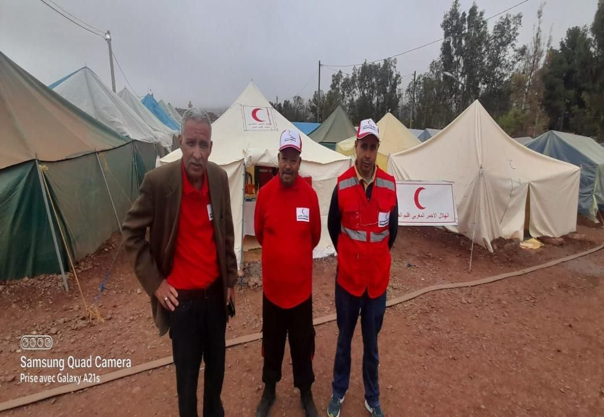
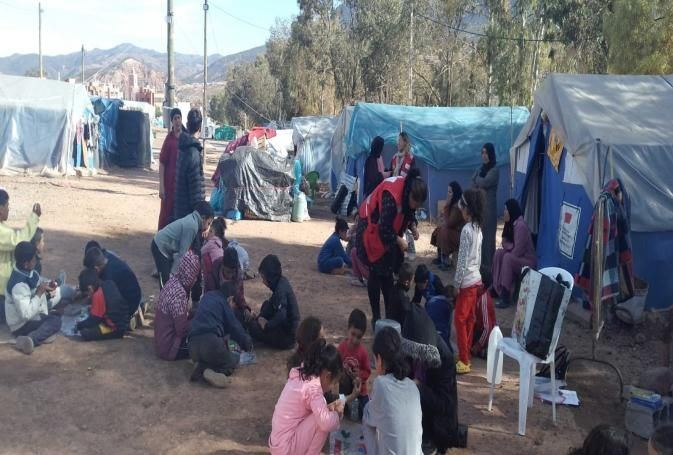
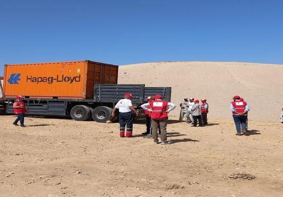
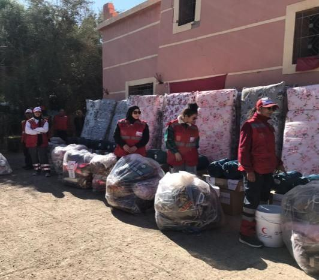

موجز أنشطة المكتب الإقليمي · 2022 ← 2025
إنسانيةٌ
تسكن الجبل.
من دواوير الأطلس الكبير إلى ساحات المدارس، يقف متطوعو الهلال الأحمر المغربي بالحوز إلى جانب الساكنة: يسعفون ويكوّنون ويساندون الأسر، وقد كانوا في الميدان منذ الساعات الأولى لزلزال 2023.
«العمل التطوعي والمشاركة في بناء المجتمع، بأي طريقة من الطرق، تساعد على النهضة والتطوير، كما تكون طريقة داعمة للتغيير والإصلاح.»


من نحن
الهلال الأحمر المغربي منظمة غير ربحية تعمل في مختلف أنحاء المملكة. وفي إقليم الحوز يشتغل تحت إشراف المكتب الإقليمي فريقٌ من المتطوعين والمتخصصين في الإسعافات الأولية والصحة العامة، ينفّذ أنشطة إنسانية وإغاثية في مناطق مختلفة من الإقليم.
ويعمل المكتب بتنسيق مع السلطات المحلية والدرك الملكي والقوات المساعدة ووزارة التربية الوطنية ووزارة الصحة والوقاية المدنية، وله فرق ميدانية جاهزة للتدخل السريع في حالات الطوارئ، كما يحرص على تطوير مهارات متطوعيه بدورات تكوينية منتظمة.
- الإسعاف والإغاثة
- التكوين والتوعية
- الصحة المجتمعية
- الدعم النفسي
- إعادة الروابط العائلية
أعضاء المكتب الإقليمي
دورات تكوينية يعمل المكتب على تنظيمها
في إطار تطوير قدرات الموارد البشرية وتأهيل المتطوعات والمتطوعين، يولي المكتب الإقليمي أهمية خاصة للتكوين والتأطير.
سجّل في دورة تكوينيةسجّل للاستفادة من دوراتنا التكوينية
املأ الاستمارة لتسجيل اهتمامك بإحدى الدورات، وسيتواصل معك المكتب الإقليمي عند برمجة الدورة المناسبة لك.
- اختر الدورة أو الدورات التي تهمك
- أرسل الاستمارة
- نتصل بك لتأكيد موعد الدورة ومكانها
ستة مجالات وفريق واحد
اضغط على أي بطاقة لعرض أبرز ما أُنجز فيها.
زلزال الحوز
شتنبر 2023
منذ الساعات الأولى للزلزال سخّر المكتب الإقليمي طاقاته وكفاءاته للتدخل بتنسيق مع جمعيات المجتمع المدني، وواصل العمل دون انقطاع خلال الأشهر الأولى قبل وصول الاتحاد الدولي وبعده.
أين تدخّلنا؟
مرّر المؤشر على نوع المساعدة لتظهر المنطقة المعنية.





سلسلة التكوينات
دورات في الإسعافات الأولية الأساسية لفائدة التلاميذ والأطر التربوية ونساء المجتمع المدني والشباب، إلى جانب تكوينات خاصة بالمتطوعين على المستوى المحلي والجهوي والوطني والدولي.
محطات من 2022 إلى 2025
صور من الميدان
ساعتان من وقتك قد تنقذان حياة.
نستقبل المتطوعات والمتطوعين من كل جماعات الإقليم، ونقدّم لهم تكوينًا في الإسعافات الأولية والدعم النفسي والسلامة الطرقية، ثم يشاركون في القوافل الطبية والحملات التحسيسية والاستجابة للطوارئ.
- تكوين مجاني ومؤطر
- شهادات مشاركة
- عمل ميداني إلى جانب فريق ذي خبرة
شكر وتقدير
يتقدم المكتب الإقليمي بالشكر إلى عامل صاحب الجلالة على إقليم الحوز، وإلى المديريات الإقليمية للتربية الوطنية والصحة، والوقاية المدنية، والدرك الملكي، والسلطات المحلية، والجماعات الترابية، والمؤسسات التعليمية، والجمعيات الشريكة، وإلى كل المتطوعات والمتطوعين الذين عملوا بجدّ وتفانٍ في جميع المحطات.